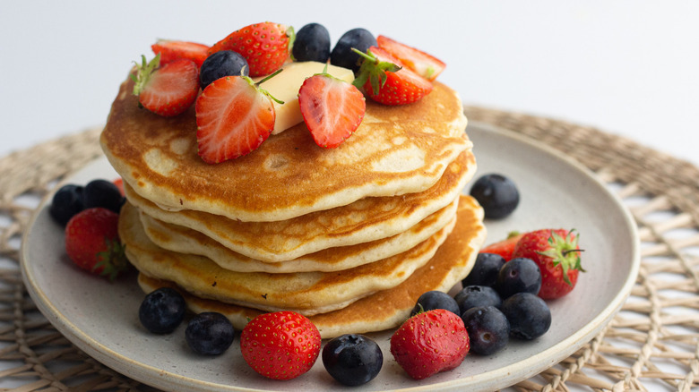

Pancakes

Description
Today, we'll be making pancakes. You will need to make the batter and then fry on a thin layer of oil
Ingredients
- Eggs
- Flour
- Sugar
- Milk (plant based substitue if you're lactose intolerant)
- Vanilla extract
- Water
- Maple syrup
- Fruits and berries
Steps / Procedures:
- First, sieve the dry ingredients to remove any dirst or clumps present in them
- Put the dry ingredients in a bowl for mixing
- Mix dry ingredientswell before adding the eggs and milk
- For the eggs, separate the egg white from the egg yolk. Whisk the egg whites till solid
- Add the egg yolks and milk into the mixture of the flour and sugar
- Once thoroughy mixed, add a few drops of vanilla extract into the batter
- Then fold the solid egg whites into the mixture with a spatula